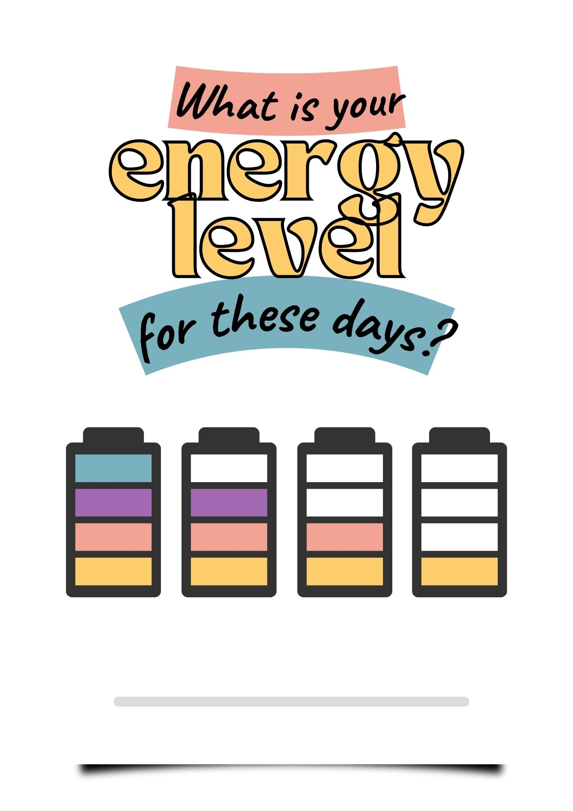

1차 나눔 · 나를 바라보기 (7분)
내 마음의 배터리는 지금 몇 칸인가요?

나눔 목적
학생들이 ‘너는 힘들어’라는 결론을 듣는 것이 아니라 자신의 에너지 상태와 그 이유를 스스로 알아차리게 합니다. 말한 내용을 신앙적으로 평가하지 않고, 다음 설교에서 “그런 나를 예수님이 보신다”는 복음으로 연결합니다.
학생들이 ‘너는 힘들어’라는 결론을 듣는 것이 아니라 자신의 에너지 상태와 그 이유를 스스로 알아차리게 합니다. 말한 내용을 신앙적으로 평가하지 않고, 다음 설교에서 “그런 나를 예수님이 보신다”는 복음으로 연결합니다.
01
배터리 상태와 이유
질문 지금 내 에너지 상태를 배터리로 표현한다면 몇 칸인가요? 왜 그렇게 생각하나요?
이어 묻기 “그 칸을 고른 이유가 있을까?” “요즘 특히 마음에 걸리는 일이 있어?”
02
충전 중인가요, 방전 중인가요?
질문 나는 요즘 충전되고 있나요, 아니면 방전되고 있나요? 무엇이 나를 그렇게 만들고 있나요?
이어 묻기 “최근에 더 방전된 순간은 언제였어?” “반대로 잠깐이라도 충전된 순간은 언제였어?”
03
지금 나에게 필요한 것은 무엇인가요?
질문 그 상태의 나에게 지금 필요한 것은 무엇일까요?
선택지 잠깐 쉬기 · 누군가에게 이야기하기 · 혼자 있는 시간 · 친구와 함께하기 · 도움 요청하기 · 아직 잘 모르겠음
교사 포인트게임, 유튜브, 잠과 같은 답을 바로 평가하지 마세요. “요즘 정말 많이 지쳐 있었구나”라고 먼저 받아 주세요. 1칸이라는 말에도 곧바로 해결책을 제시하지 않습니다.
1차 나눔 마무리 멘트
“우리의 배터리 상태는 모두 다르구나. 그런데 오늘 말씀은 우리가 몇 칸인지 판단하는 데서 끝나지 않아. 이렇게 지쳐 있는 우리를 예수님이 보고 계신다는 이야기를 들려주고 있어.”
“우리의 배터리 상태는 모두 다르구나. 그런데 오늘 말씀은 우리가 몇 칸인지 판단하는 데서 끝나지 않아. 이렇게 지쳐 있는 우리를 예수님이 보고 계신다는 이야기를 들려주고 있어.”